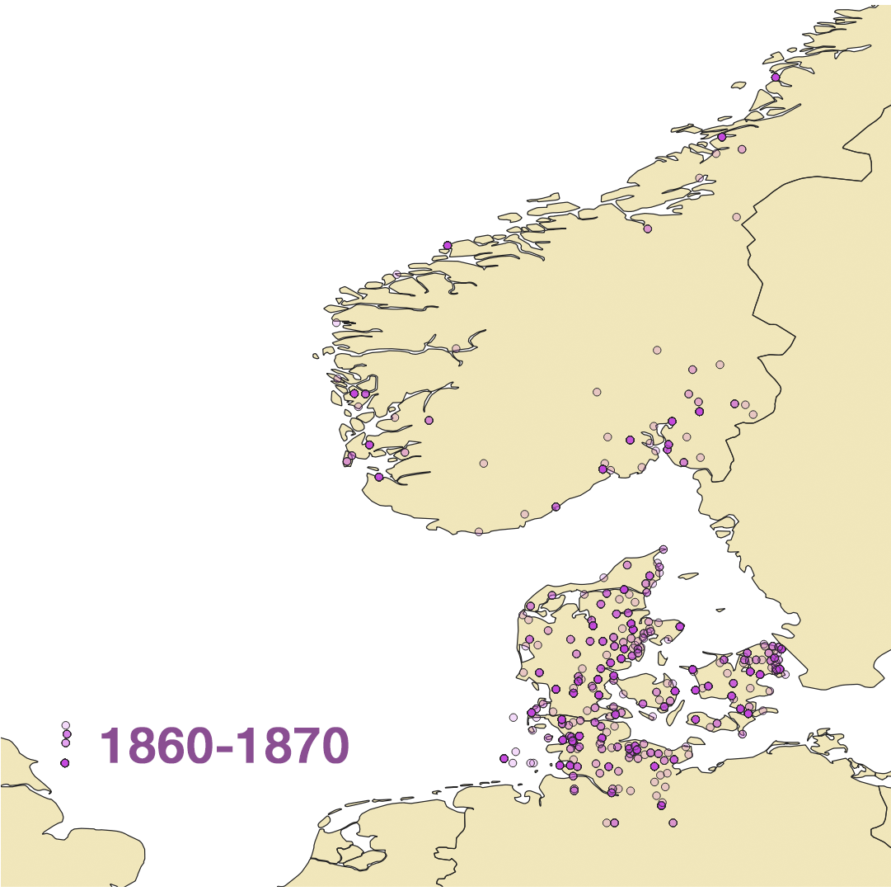
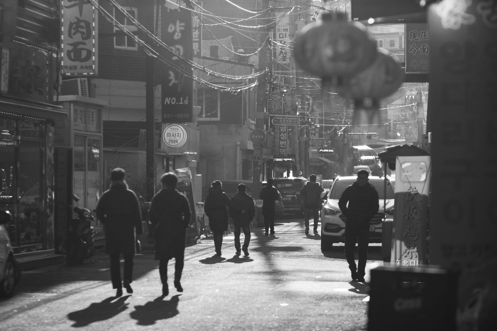

The Spatial History of a History Journal
Grounding historipgraphical critiques with digital humanities tools
Grounding historipgraphical critiques with digital humanities tools
How did the geographical boundaries of what was seen as Danish history change over the last 150 years? Historisk Tidsskrift, as a journal dedicated to Danish history, can help us answer this question. Historisk Tidsskrift was recently digitised. Now all articles published in the journal since 1840 are easily accessible online. It is a very rich well of the work of Danish historians middle of the 19th century. During this time, Denmark has changed from being a multinational empire to a small European nation. However, has the places addressed as Danish history by Danish historians changed with it?

The aim of this paper is to outline how a spatial history methodology might be applied to investigate the construction of imagined geographies in the Danish history journal Historisk Tidsskrift. The set of articles published in Historisk Tidsskrift from 1860 to 1990 are used to perform a spatial analysis as well as topic modelling of the coverage of the journal throughout time. The main inspirations for this history investigation is Cameron Blevins excellent work on the spatial history of newspapers in Houston as well as Lefebvre’s work which contributed greatly to the spatial turn in history. This paper serves as the initial outline of a project which seeks to interrogate what has mattered to Danish historians over time. The following sections of the paper will seek to combine the spatial history approach with a thorough contextualisation of the journal throughout time using more traditional historical methodological tools.
What does it require to write a spatial history of a history journal? First, in order to properly use the spatial history approach, we must appreciate that space and place is not simply defined in terms of objective geometrical or geographical measures, but is a kind of consciousness that is malleable and historically contingent. Lefebvre, being perhaps the father of this approach, introduced the idea that space is socially constructed. Space here goes beyond the mere physical and seeks to describe things such as demographic, social and economic spaces which are often entangled with the physical.
In looking at Historisk Tidsskrift we are trying to tease out how space was constructed by the journal. For this, the term imagined geographies will be important. Imagined geographies was first mentioned by Lefebvre who used it to describe the constructed spatial consciousness provided to someone engaging with something. In this paper, the term will mean the constructed spatial image or consciousness that emerges when articles in the journal form a period or edition are approached as a cohesive whole. Blevins introduced this particular definition of the term during his research on the imagined geographies of newspapers in Houston as a way to describe the unique views the newspapers presented through their daily publications. If you imagine a person reading Historisk Tidsskrift with no other geographical knowledge, the spatial consciousness they would acquire from reading the journal would be a distorted version of the real geographical map. Areas mentioned a lot would stand out as more expansive than areas which are left out. So the ideas and understanding of space people acquire from reading Historisk Tidsskrift would be very different from people learning relationships between place and space through reading another journal or learning about geography strictly through “objective maps”. The first figure presented below can be seen as an approximation to the imagined geography of the articles published in Historisk Tidsskrift in the period between 1860-1870. THe vizualisation above is the veyr first visualisation suggests that the journal managed to cover history relating to the main islands, most parts of Jutland and the areas of Schleswig Holstein.
Based on these insights I decided that It would be very valuable to see the Chinatown of Daerim-dong and its Joseonjok population as a manifestation of, to some degree, universal struggles of identity which are experienced currently in different places throughout the world.[1] The particular story of Daerim-dong allows us to situate our discussion in the local. It allows the
uninformed listener to better understand how large-scale processes such as the Cold War or South Korean industrialisation might impact different groups and nurture the creation of spaces
and neighbourhoods.[2]
The guided, app-based tour format allows me as a producer accurately time and synchronises a spatial and auditory experience. For me, the combination of the spatial and the auditory allow me to explain well the space in which an individual is situated. You can explain how different forces worked to produce the physical and spatial reality the
individual is engaging with while experiencing the tour. In my tour, this allowed me to show how abstract concepts like ethnicity, nationality and power manifest and influence the creation of a Korean Chinese enclave close to the heart of Seoul in South Korea. The fact that this tour is [3] digital makes it available to many more people than if I had been giving a tour in person.
Detour studio is not that easy to use and that impacts who might end up using the tool. Like other digital or computational tools, Detour limits it userbase in being difficult to use. Another limitation of this style is the lack of potential for listeners or the local population to build on and expand the existing tour. If the local population would be unhappy with the tour I have created, they are not in a great position to contribute or make their voices heard.[4]

I think the identity issues the I explore in my narrative could be a textbook case of historicity. It goes like this: A population of a culture is split into two. Each is put on one of two sides in the Cold War. One half is put in a communist country with limited contact with consumer market societies. The other is fully integrated into the capitalist global market. Then, you observe the conflicts that arise as diverse groups try to negotiate the meaning of a culture, nation and ethnicity to which they all relate and feel ownership of.[5] It is not that one is more representative I think. Nothing is constant throughout history, both populations have the same heritage down the line but have developed in different ways in recent times. In our case, you have South Korea on one side with more than 40 million people versus Korean Chinese who amount to less than 4 million people. The Korean Chinese are the subaltern.

They have been silenced as South Korea has grown economically successful and gained prominence internationally. [6]
Particularly interesting is how some South Koreans claim that Korean Chinese have digressed from the true Korean path. South Koreans claim this while rarely being aware of how much they themselves have changed in the last 70 years...